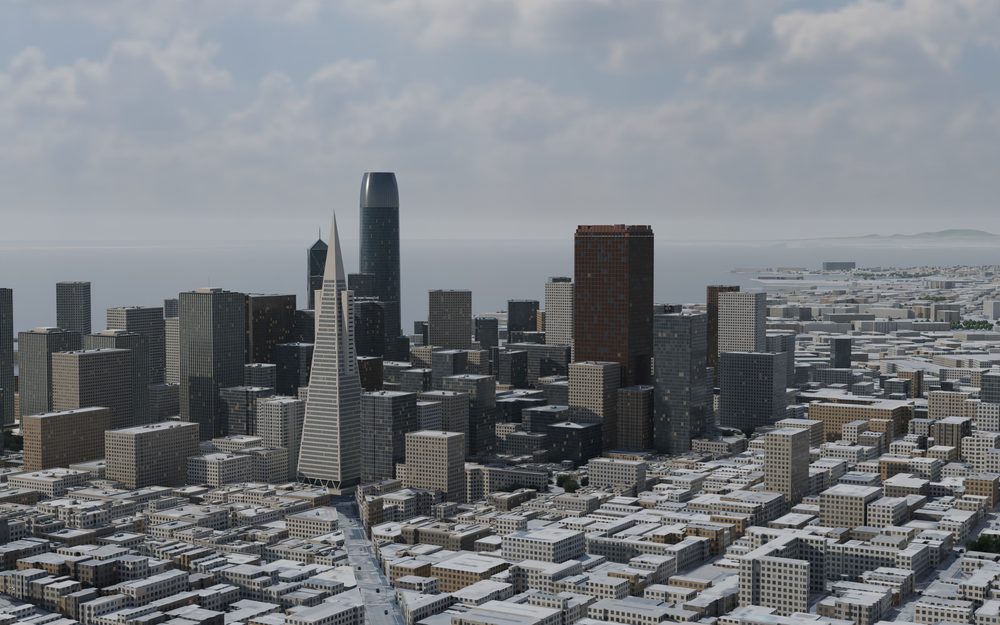
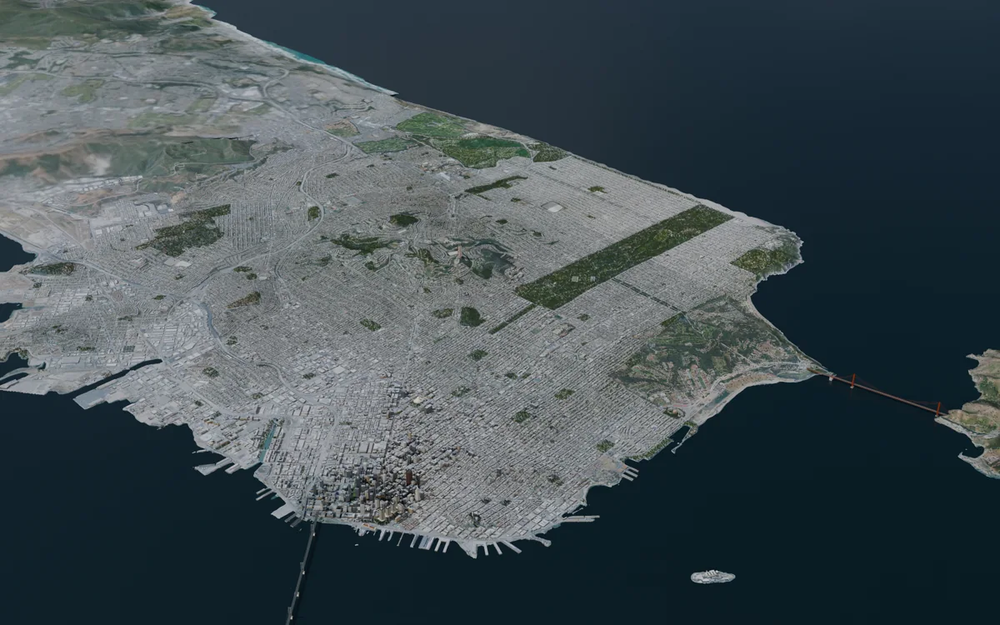
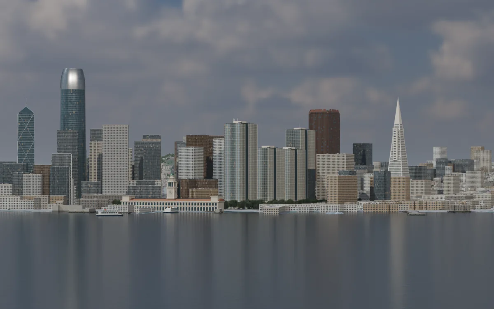
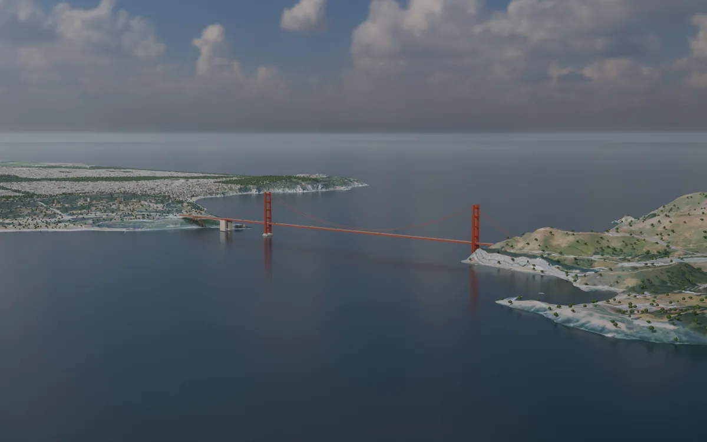
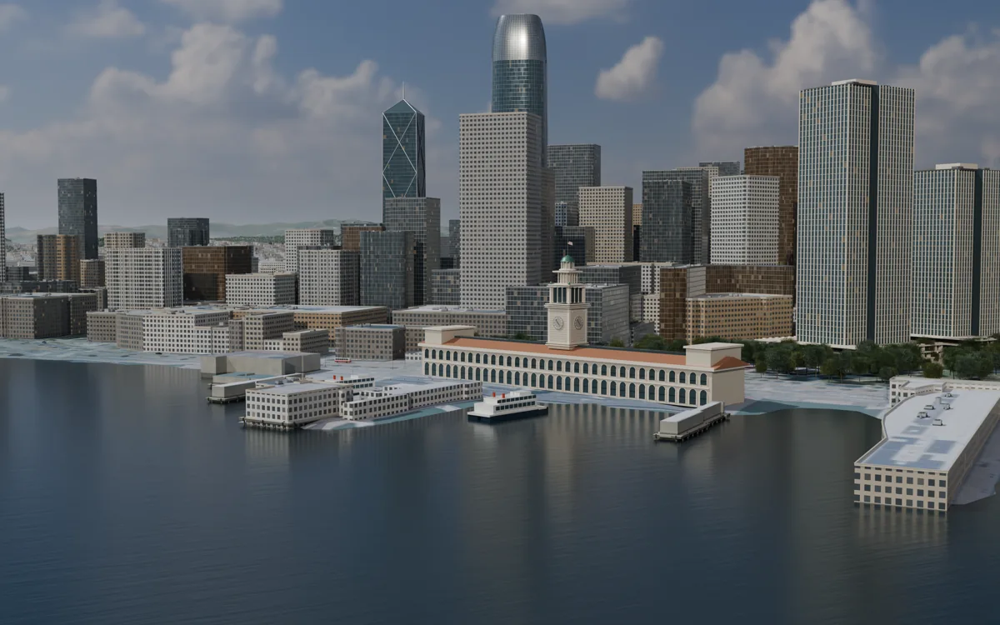
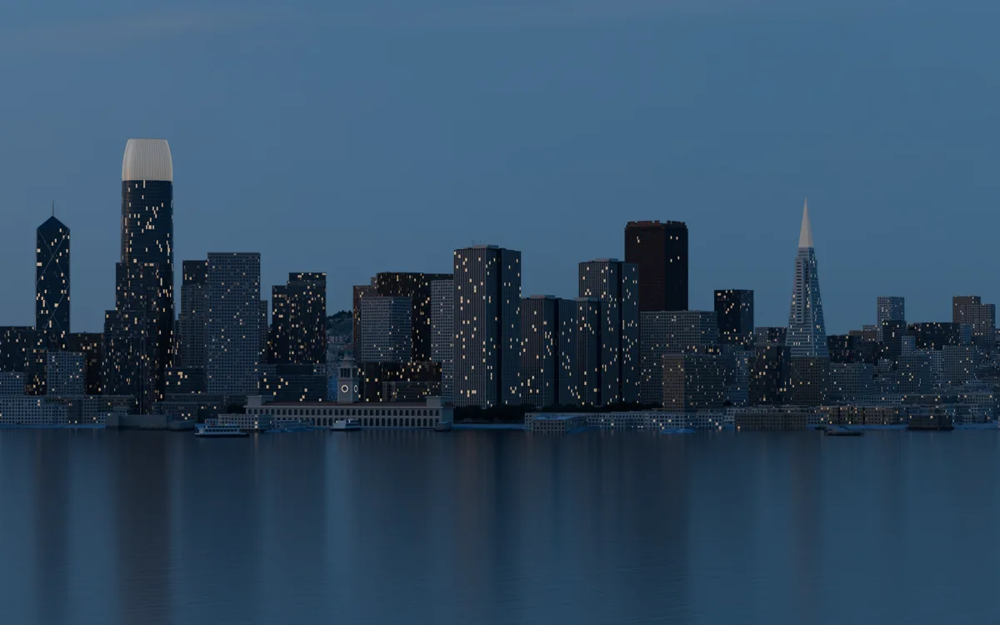

A city reconstructed in Blender.
Its skyline, hills and waterfront, from daylight to blue hour.
San Francisco

Explore in 3D
Turn the city in your hands. A lighter version of the scene, ready for your browser.

Loads only when you choose. Best on a recent device.
Keep exploring the views
This device couldn’t open the 3D scene. The complete render gallery is available below.
See the rendersDrag to orbit. Scroll or pinch to zoom. Right-drag or two fingers to pan. Arrow keys pan when the view is focused.
The browser model simplifies materials and small details. The renders show the complete cinematic scene.
Six perspectives
From the Golden Gate to blue hour on the bay. Select any view to see it larger.









Built from the city
- Building footprint records
- 177,023
- Vertices in the Blender scene
- 12.6 million
- Rendered views
- 6 at 3200 × 2000
A favorite city, rebuilt from the ground up.
Historic building footprints, elevation data and aerial imagery establish the geography. Landmarks, façades, vegetation and street details combine measured inputs with modeled interpretation.
Salesforce Tower, the Transamerica Pyramid, the Ferry Building and the Golden Gate were rebuilt with finer architectural detail. The scene includes the elevated Salesforce Park, ferries, rooftop equipment and street life.
This is an artistic reconstruction. Smaller façades and street details are approximate, and the source datasets come from different dates.
Data and image credits
Building footprints, streets and parks: DataSF. Terrain: Mapzen / AWS Terrain Tiles. Ground and roof imagery: public-domain USGS / USDA NAIP.
Skies: Poly Haven’s Kloofendal 48d by Greg Zaal, sky edits by Jarod Guest, and Industrial Sunset 02, under CC0. All displayed city views were rendered from this Blender scene. Source and documentation.
Take it with you
The complete Blender scene includes its textures.
Explore it, edit it, and find your own view.